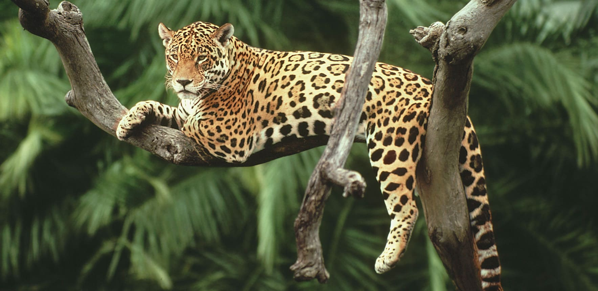

Biodiversidad
La biodiversidad o diversidad biológica es la variedad de la vida. Este reciente concepto incluye varios niveles de la organización biológica. Abarca a la diversidad de especies de plantas, animales, hongos y microorganismos que viven en un espacio determinado, a su variabilidad genética, a los ecosistemas de los cuales forman parte estas especies y a los paisajes o regiones en donde se ubican los ecosistemas. También incluye los procesos ecológicos y evolutivos que se dan a nivel de genes, especies, ecosistemas y paisajes.
Colombia es uno de los pocos países megadiversos en el mundo, se estima que en el país podrían existir entre 200.000 y 900.000 especies. Puede decirse que, aproximadamente, por cada 10 especies que existen en el planeta, una habita en nuestro territorio. Tener una riqueza natural tan amplia es un regalo y, al mismo tiempo, una responsabilidad con la que, afortunadamente, muchas personas y organizaciones están comprometidas.
Proteger y conservar los ecosistemas y la riqueza biológica del país requiere información actualizada, que retrate fielmente el estado del conocimiento de la biodiversidad en todo el territorio. Por eso, anualmente el SiB Colombia sintetiza en cifras los datos que los socios publicadores comparten a través del sistema; a este resultado se le llama Biodiversidad en cifras, un resumen con los consolidados de las especies registradas al 31 de diciembre de 2021.
Estos datos, y la información que de ellos se deriva, constituyen una fotografía que puede ser usada como referente y, sobre todo, facilita la toma de decisiones en escenarios donde la biodiversidad sea protagonista.